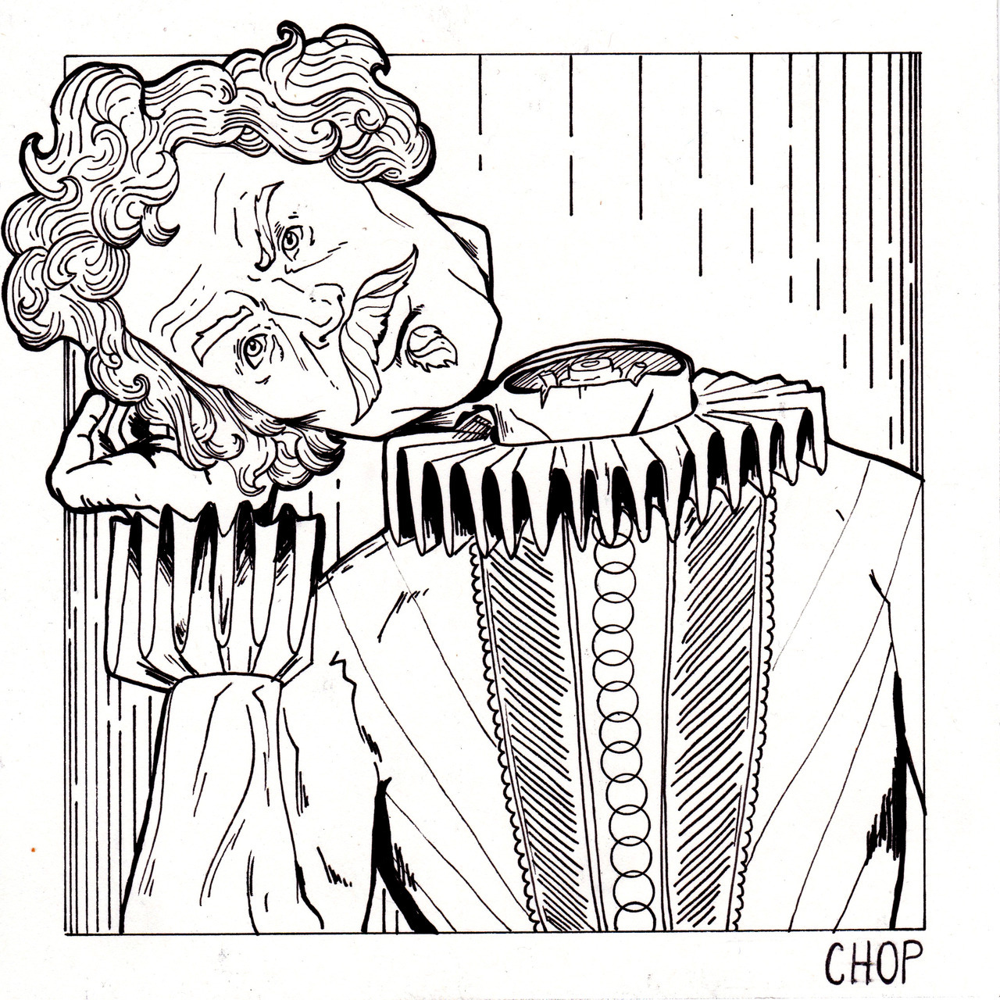

October arrived, spreading a damp chill over the grounds and into the castle. Madam Pomfrey, the nurse, was kept busy by a sudden spate of colds among the staff and students. Her Pepperup potion worked instantly, though it left the drinker smoking at the ears for several hours afterward. Ginny Weasley, who had been looking pale, was bullied into taking some by Percy. The steam pouring from under her vivid hair gave the impression that her whole head was on fire.
Raindrops the size of bullets thundered on the castle windows for days on end; the lake rose, the flower beds turned into muddy streams, and Hagrid's pumpkins swelled to the size of garden sheds. Oliver Wood's enthusiasm for regular training sessions, however, was not dampened, which was why Harry was to be found, late one stormy Saturday afternoon a few days before Halloween, returning to Gryffindor Tower, drenched to the skin and splattered with mud.
Even aside from the rain and wind it hadn't been a happy practice session. Fred and George, who had been spying on the Slytherin team, had seen for themselves the speed of those new Nimbus Two Thousand and Ones. They reported that the Slytherin team was no more than seven greenish blurs, shooting through the air like missiles.
As Harry squelched along the deserted corridor he came across somebody who looked just as preoccupied as he was. Nearly Headless Nick, the ghost of Gryffindor Tower, was staring morosely out of a window, muttering under his breath, ". . . don't fulfill their requirements . . . half an inch, if that . . ."
"Hello, Nick," said Harry.
"Hello, hello," said Nearly Headless Nick, starting and looking round. He wore a dashing, plumed hat on his long curly hair, and a tunic with a ruff, which concealed the fact that his neck was almost completely severed. He was pale as smoke, and Harry could see right through him to the dark sky and torrential rain outside.
"You look troubled, young Potter," said Nick, folding a transparent letter as he spoke and tucking it inside his doublet.
"So do you," said Harry.
Image of Nearly Headless Nick by Sarah V.
"Ah," Nearly Headless Nick waved an elegant hand, "a matter of no importance. . . . It's not as though I really wanted to join. . . . Thought I'd apply, but apparently I 'don't fulfill requirements' -"
In spite of his airy tone, there was a look of great bitterness on his face.
"But you would think, wouldn't you," he erupted suddenly, pulling the letter back out of his pocket, "that getting hit forty-five times in the neck with a blunt axe would qualify you to join the Headless Hunt?"
"Oh - yes," said Harry, who was obviously supposed to agree.
"I mean, nobody wishes more than I do that it had all been quick and clean, and my head had come off properly, I mean, it would have saved me a great deal of pain and ridicule. However -" Nearly Headless Nick shook his letter open and read furiously: "'We can only accept huntsmen whose heads have parted company with their bodies. You will appreciate that it would be impossible otherwise for members to participate in hunt activities such as Horseback Head-Juggling and Head Polo. It is with the greatest regret, therefore, that I must inform you that you do not fulfill our requirements. With very best wishes, Sir Patrick Delaney-Podmore.'"
Fuming, Nearly Headless Nick stuffed the letter away.
"Half an inch of skin and sinew holding my neck on, Harry! Most people would think that's good and beheaded, but oh, no, it's not enough for Sir Properly Decapitated-Podmore."
Nearly Headless Nick took several deep breaths and then said, in a far calmer tone, "So - what's bothering you? Anything I can do?"
"No," said Harry. "Not unless you know where we can get seven free Nimbus Two Thousand and Ones for our match against Sly -"
The rest of Harry's sentence was drowned out by a high-pitched mewling from somewhere near his ankles. He looked down and found himself gazing into a pair of lamp-like yellow eyes. It was Mrs. Norris, the skeletal gray cat who was used by the caretaker, Argus Filch, as a sort of deputy in his endless battle against students.
"You'd better get out of here, Harry," said Nick quickly. "Filch isn't in a good mood - he's got the flu and some third years accidentally plastered frog brains all over the ceiling in dungeon five. He's been cleaning all morning, and if he sees you dripping mud all over the place -"
"Right," said Harry, backing away from the accusing stare of Mrs. Norris, but not quickly enough. Drawn to the spot by the mysterious power that seemed to connect him with his foul cat, Argus Filch burst suddenly through a tapestry to Harry's right, wheezing and looking wildly about for the rule-breaker. There was a thick tartan scarf bound around his head, and his nose was unusually purple.
"Filth!" he shouted, his jowls aquiver, his eyes popping alarmingly as he pointed at the muddy puddle that had dripped from Harry's Quidditch robes. "Mess and muck everywhere! I've had enough of it, I tell you! Follow me, Potter!"
So Harry waved a gloomy good-bye to Nearly Headless Nick and followed Filch back downstairs, doubling the number of muddy footprints on the floor.
Harry had never been inside Filch's office before; it was a place most students avoided. The room was dingy and windowless, lit by a single oil lamp dangling from the low ceiling. A faint smell of fried fish lingered about the place. Wooden filing cabinets stood around the walls; from their labels, Harry could see that they contained details of every pupil Filch had ever punished. Fred and George Weasley had an entire drawer to themselves. A highly polished collection of chains and manacles hung on the wall behind Filch's desk. It was common knowledge that he was always begging Dumbledore to let him suspend students by their ankles from the ceiling.
Filch grabbed a quill from a pot on his desk and began shuffling around looking for parchment.
"Dung," he muttered furiously, "great sizzling dragon bogies . . . frog brains . . . rat intestines . . . I've had enough of it . . . make an example . . . where's the form . . . yes . . ."
He retrieved a large roll of parchment from his desk drawer and stretched it out in front of him, dipping his long black quill into the ink pot.
"Name . . . Harry Potter. Crime . . ."
"It was only a bit of mud!" said Harry.
"It's only a bit of mud to you, boy, but to me it's an extra hour scrubbing!" shouted Filch, a drip shivering unpleasantly at the end of his bulbous nose. "Crime . . . befouling the castle . . . suggested sentence . . ."
Dabbing at his streaming nose, Filch squinted unpleasantly at Harry who waited with bated breath for his sentence to fall.
But as Filch lowered his quill, there was a great BANG! on the ceiling of the office, which made the oil lamp rattle.
"PEEVES!" Filch roared, flinging down his quill in a transport of rage. "I'll have you this time, I'll have you!"
And without a backward glance at Harry, Filch ran flat-footed from the office, Mrs. Norris streaking alongside him.
Peeves was the school poltergeist, a grinning, airborne menace who lived to cause havoc and distress. Harry didn't much like Peeves, but couldn't help feeling grateful for his timing. Hopefully, whatever Peeves had done (and it sounded as though he'd wrecked something very big this time) would distract Filch from Harry.
Thinking that he should probably wait for Filch to come back, Harry sank into a moth-eaten chair next to the desk. There was only one thing on it apart from his half-completed form: a large, glossy, purple envelope with silver lettering on the front. With a quick glance at the door to check that Filch wasn't on his way back, Harry picked up the envelope and read: kwikspell A Correspondence Course in Beginners' Magic